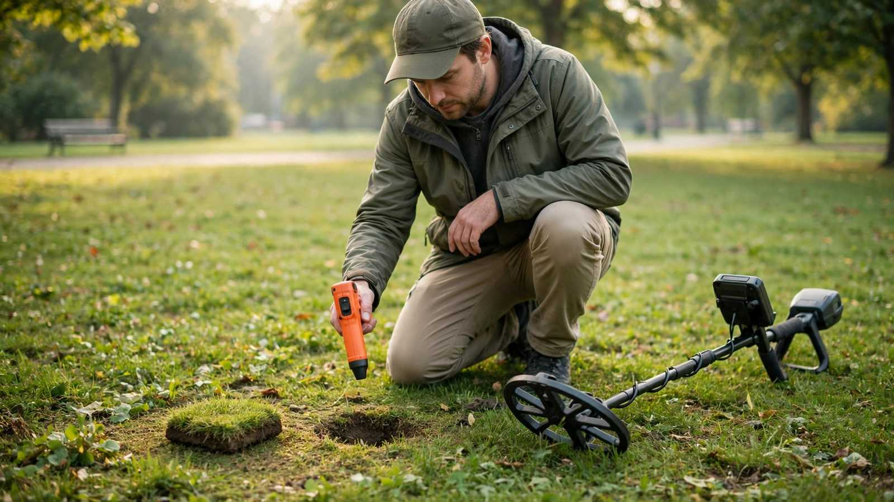

Metal detecting with a pinpointer: what it does, how to use one in the hole, and when it saves a dig

A pinpointer does not find targets. That job belongs to the detector in your other hand, and confusing the two tools is where most beginner frustration with a probe starts. A pinpointer is a small, static, close range detector that answers one narrow question: which part of this hole, plug, or handful of soil holds the metal? Used for that question, it turns a blind excavation into a short search and keeps holes small. Used as a tiny detector for sweeping ground, it disappoints, because its reach is a few inches by design. This guide covers what the probe actually does, the power-on habit that decides whether it behaves, a numbered in-hole procedure, the retune move most beginners never learn, and a plain framework for the digs where a pinpointer saves real time and the digs where it does not.
What a pinpointer actually does
Operation is automatic, and a typical probe detects all metals, ferrous and non-ferrous alike. That is the first thing to understand: a response confirms nearby metal, not a coin, not jewellery, and not anything valuable. The information is in the alert pattern. On the Garrett Pro-Pointer AT, the manual describes proportional audio and vibration: the pulse rate increases as the probe moves closer to a metallic target. Read that rising rate like a distance gauge. Slow, spaced pulses mean keep moving. A fast, urgent pulse means the target is close. A continuous tone means the tip is right at it.
The second thing to understand is where the probe actually senses. Many models scan 360 degrees, alarming along the side of the probe as well as at the tip, and Garrett notes that maximum detection of very small targets is against the side, about half an inch from the tip. The practical consequence matters in a hole: the first alert does not always mean the target sits directly under the tip. It may be beside the probe. Pull back, change the angle, and approach again from a different side to narrow the spot before you move any soil.
Before the first hole: power-on discipline
A pinpointer measures a baseline when it switches on, and everything it reports afterwards is judged against that baseline. Switch it on next to your digger, your keys, or the detector coil, and the baseline is wrong from the start. Garrett warns plainly not to turn the Pro-Pointer AT on adjacent to a target, because the target can be cancelled out. DetectorGear's tuning guide gives the working rule: tune in open air, tip pointed away from your body, at least a hand's width from anything metal, including rings, watches, the digger, and the coil.
One short homework exercise pays for itself. Before the first hunt, set a coin on a table and move it toward the probe slowly, learning how the alerts change with distance. Check the response along the side of the probe as well as at the tip, so the 360 degree behaviour is familiar before it surprises you in a hole. Two minutes at home replaces a confused ten minutes kneeling in a park.
The in-hole procedure
- Centre the signal with the main detector first. The probe cannot fix a badly centred target. Cross-sweep until the signal is as small as the coil can make it, then set the detector down a few feet away, coil clear of the hole, so it cannot interfere with the probe.
- Switch the probe on in clean air. Tip up, away from your tools and your own jewellery, and give it a second to settle before it goes near the ground.
- Scan the surface before you cut. Run the probe over the marked spot. A loud response at the surface means the target may be sitting in the grass roots or the top layer of soil, recoverable without a plug at all.
- Cut the plug, then check the plug first. If the plug holds the target, the hole needs no more work. Break the plug apart gently over a ground cloth and let the probe find the exact piece of soil.
- Work the hole in order: bottom, then walls. Scan the bottom, then run the tip around each wall. A response from one wall means the target sits off to that side. Widen toward the signal rather than digging deeper.
- Read the rate, not just the beep. Move slowly and follow the rising pulse rate. Where the rate peaks, stop and remove a small amount of soil with your fingers or a plastic scoop, not the digger blade. That habit is what keeps good finds free of digger scratches.
- If the hole and plug stay silent, re-sweep both with the main detector before digging deeper. Silence usually means the target is still below probe range or sitting in the loose soil you already moved. Check the pile, then take out a little more soil and probe again.
- Recover, re-scan, refill. Once the target is out, probe the hole once more. A second response means a second target, which is common enough that the check is never wasted. Then refill and repair as usual.
What success looks like at this stage: the target comes out of the plug or the first small removal of soil, the hole never gets wider than the plug you cut, and the whole recovery takes a couple of minutes instead of ten.
Retune: the field-shrinking move most beginners never use
Most guides mention retune only as a cure for a misbehaving probe in mineralized ground, and it does that job: Garrett's Fast Retune tunes out saltwater, wet sand, and highly mineralized soil by holding the tip to the ground and quick-pressing the button. But the same button does a second, more useful job. The manual's section on precisely pinpointing large targets describes it directly: scan toward the object until the response rises to a full, constant alarm, quick-press the button to retune and narrow the detection field, then keep scanning to find the precise location. Repeat the retune to narrow the field further.
In a hole, that sequence solves the most common probe problem there is: the whole hole seems to beep. A broad response usually means the target is large, or very close, or the sensitivity is set high for the space. Retuning beside the target shrinks the field so only the nearest metal keeps the alarm at full rate. Work in from two sides after each retune and the vague patch becomes a point. On models with sensitivity levels instead, the same effect comes from dropping a level: the Minelab PRO-FIND 35, for example, offers five sensitivity levels, which exist largely so a broad signal can be reduced rather than dug around.
When it saves a dig, and when it does not
| Situation | Pinpointer verdict | Why |
|---|---|---|
| Plug is cut and the target could be in the plug, the bottom, or a wall | Saves the dig | It names the one place holding metal, so soil comes out of that spot only |
| Small coin or jewellery lost in loose soil or a handful of dirt | Saves the dig | It checks handfuls faster than eyes can, especially when the find is mud coloured |
| Target still deeper than the probe can reach | Not yet | Probe silence here means dig a little deeper and scan again; the main detector still owns this stage |
| Target already out, sitting in the excavated pile | Second tool, not first | Sweep the pile with the main detector first; use the probe on the pile only if the coil check leaves the spot vague |
| Searching a wide area for a dropped item | Wrong tool | The reach is a few inches; cover ground with the detector and bring the probe in for the last stage only |
The pattern underneath the table is simple. A pinpointer saves a dig when the question has narrowed to a small volume of soil and the problem is knowing which part of it holds metal. It saves nothing while the question is still where the target is in the ground, or how deep. Beginners who expect it to help with those earlier questions conclude the probe is useless. It is not useless. It is specialised, and the specialisation is the last few inches.
When the probe lies: falsing causes and fixes
A probe that beeps at nothing makes recovery slower than working without one, and most falsing comes from a short list of predictable causes. Work the table in order before assuming the tool is faulty.
| What it looks like | Likely cause | Fix |
|---|---|---|
| Constant beep or vibration right after power-on | Bad tune: it baselined next to metal | Switch off, hold the tip in open air away from metal, switch on again |
| Drift, weak response, random chirps | Low battery | Fit a fresh battery or recharge; low power causes more odd behaviour than most users expect |
| Beeps on the hole wall or on certain stones | Mineralized soil or hot rocks | Lower sensitivity; retune with the tip near the soil so the ground becomes the baseline |
| Chatter in wet sand at the beach | Salt response | Retune with the tip in the wet sand and run a lower sensitivity |
| Beeps when your hand or digger moves | Nearby metal: ring, watch, digger blade, or the detector coil | Move the tool away, take the ring off, and set the detector a few feet from the hole |
One limit explains most of this table. A pinpointer does not carry the ground balancing system of a full size detector, so it handles difficult ground with retuning and sensitivity changes instead. That is not a defect to curse at the beach. It is the operating method: retune often, run lower sensitivity in bad ground, and probe the soil you removed rather than the hole wall when the wall itself is responding.
Treat the probe as a locating instrument, not a digging tool. Prying with the tip is the classic way to crack a housing, and a probe used as a lever will eventually behave like a broken one. Soil comes out with fingers, a plastic scoop, or the digger. The probe only points.
What success looks like
A pinpointer is earning its place in the pouch when three things become normal. First, plugs stop growing: the target comes out of the plug, a wall, or the first small removal of soil, and the hole stays the size you cut. Second, the vanishing target mostly vanishes as a problem, because the check order, plug, bottom, walls, loose soil, catches it before panic digging starts. Third, recoveries get quiet and quick, a couple of minutes of method instead of ten minutes of widening. If none of that is happening, the fault is almost never the probe. It is the power-on habit, a sensitivity setting too high for the hole, or a retune that never gets used. Fix those three, in that order, before shopping for a different model.
— Tom Reilly, Home & DIY Writer
Sources, accessed November 20, 2026: Garrett Pro-Pointer AT owner's manual (proportional alert, 360 degree side scan, Fast Retune, precisely pinpointing large targets); DetectorGear, "Pinpointer Keeps Beeping? Causes and Fixes for Falsing" (tuning baseline, falsing table, field fix order); Troveology, "What Is a Pinpointer Used For?" (in-hole roles, side scan behaviour, PRO-FIND 35 sensitivity levels); TechMetalsResearch, "How To Use a Metal Detecting Pinpointer" (proportional audio distance, pile check). Technique is general information; follow your own model's manual where its controls differ.